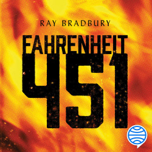
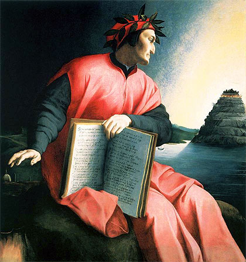
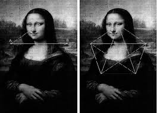
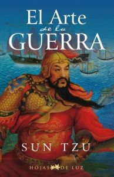

Fahrenheit 451
Ambientada en el siglo XXIV, Fahrenheit 451, cuenta la historia del protagonista Guy Montag. Al principio, Montag disfruta de su oficio de bombero es decir quemando libros conservados ilegalmente así como las casas de sus dueños. Sin embargo, de pronto, Montag empieza a cuestionar el valor de su profesión y a su vez, su vida. A lo largo de la novela, Montag lucha contra su existencia y acaba huyendo de esta sociedad opresiva, de censura; se une a un grupo subterráneo de intelectuales. Con sus amigos recién conocidos, Montag, testigo de la destrucción atómica de la ciudad, se dedica a reconstruir una literata y culta sociedad.

La Divina Comedia
Escrita por el florentino Dante Alighieri entre 1304 y 1321 aproximadamente, es una poesía épica, género literario que consiste en la narración en verso de las hazañas de los héroes. Tales hazañas constituyen un modelo de virtud, sean verdaderas o ficticias. La Divina comedia representa un compendio de la cultura y el conocimiento medieval, tanto en lo religioso como en lo filosófico, lo científico y lo moral.

El Código Da Vinci
Se desarrolla trece personajes el primero de ellos es Robert Langdon, es un profesor de alegoría y simbología religiosa de la Universidad de Harvard un campo artificial congruente con el estudio de símbolos históricos, que no está relacionado metodológicamente con la disciplina de la semiótica. Se pasa gran parte de la novela esquivando a la policía y tratando de resolver el misterio de una antigua sociedad secreta, el Priorato de Sión que una vez fue dirigido por Leonardo da Vinci.

El Arte de la Guerra
Es considerado uno de los mejores y más vigentes libros de estrategia militar de todos los tiempos. Sus advertencias han tenido influencia a lo largo de la historia sobre grandes estrategas de la guerra y la política de Oriente y Occidente, como Nicolás Maquiavelo, Napoleón Bonaparte o Mao Zedong.
